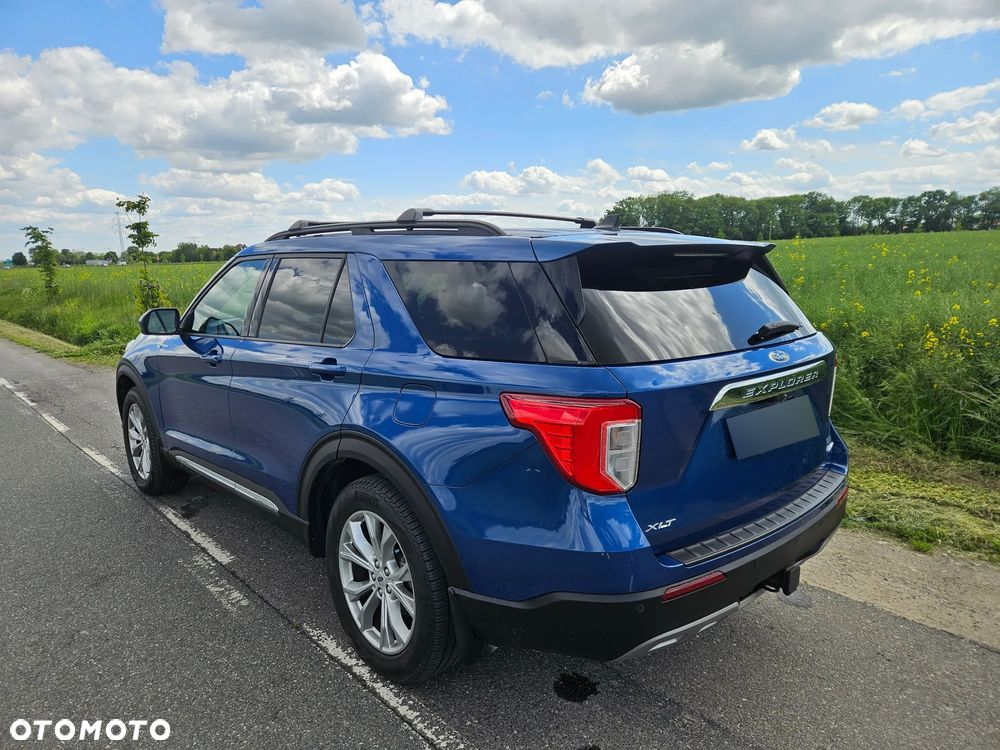
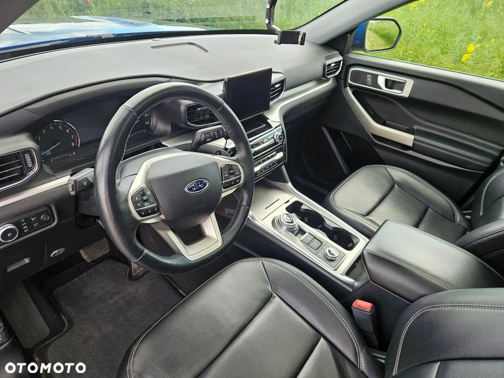
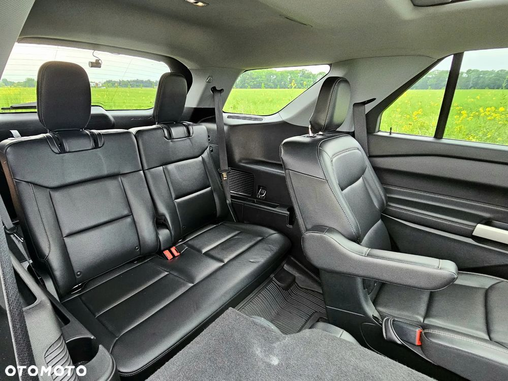

Przedmiotem sprzedaży jest Ford Explorer z 2021 roku z benzynowym silnikiem 2.3 Ecoboost o mocy 300 koni mechanicznych.
Samochód sprowadzony na indywidualne zamówienie w Grudniu 2022 roku ze Stanów Zjednoczonych jako auto z minimalną szkodą – doprowadzony do stanu fabrycznego wyłącznie przy użyciu oryginalnych części w ASO Ford (faktury do wglądu).
W momencie zakupu tego egzemplarza w USA, w Polsce ten model oferowany był jedynie z hybrydą plug-in i rozpoczynał się od ponad 400 tysięcy złotych.
Samochód obecnie ma 65 tysięcy kilometrów przebiegu i jest w świetnym stanie – serwisowany zgodnie z zaleceniami producenta i w autoryzowanej placówce.
Nadwozie w stanie bardzo dobrym, adekwatnym do młodego wieku i niskiego stanu licznika.
Wnętrze zadbane, tapicerka skórzana bez przetarć i uszkodzeń, matowa, wszystkie elementy wyposażenia sprawne.
Auto na bieżąco pod opieką renomowanego studia – pielęgnowane przez profesjonalistów i przy użyciu odpowiedniej jakości środków.
Instalacja gazowa KME z butlą w miejscu koła zapasowego o pojemności 62 litrów – zbiornik pozwala na przejechanie 350 kilometrów na samym LPG przy podróżach w 6 osób, pełnym bagażem oraz dużym boxem dachowym Thule.
Box to największy model Thule – zdecydowany kupujący otrzyma go gratis wraz z samochodem.
Samochód do obejrzenia we Wrocławiu/Kiełczowie po wcześniejszym umówieniu(nie zawsze jestem na miejscu)
Sprzedaż prywatna na podstawie umowy kupna-sprzedaży.
Czytający przez OLX - wejdźcie na Otomoto by zobaczyć film w 4k 60fps oraz więcej zdjęć.
